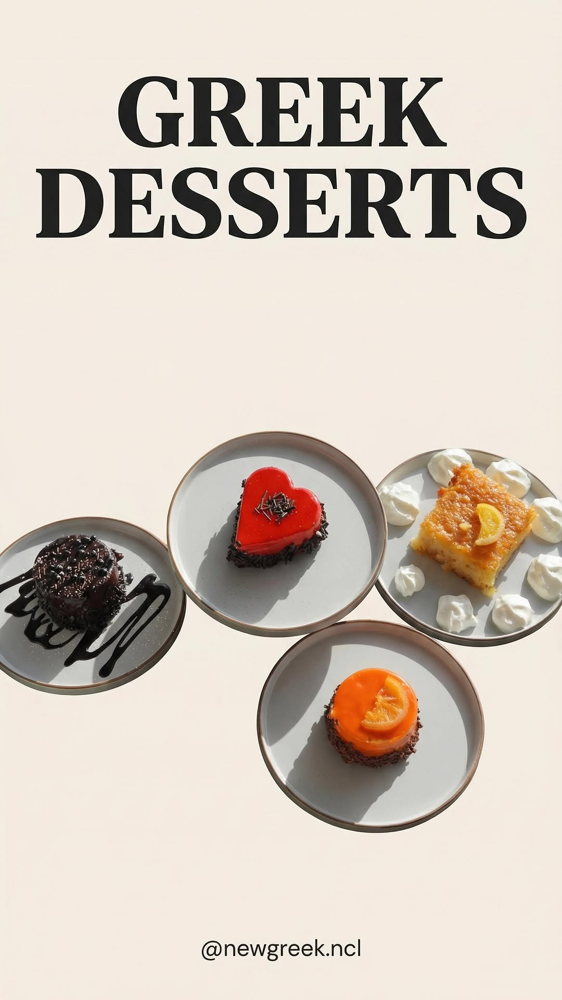
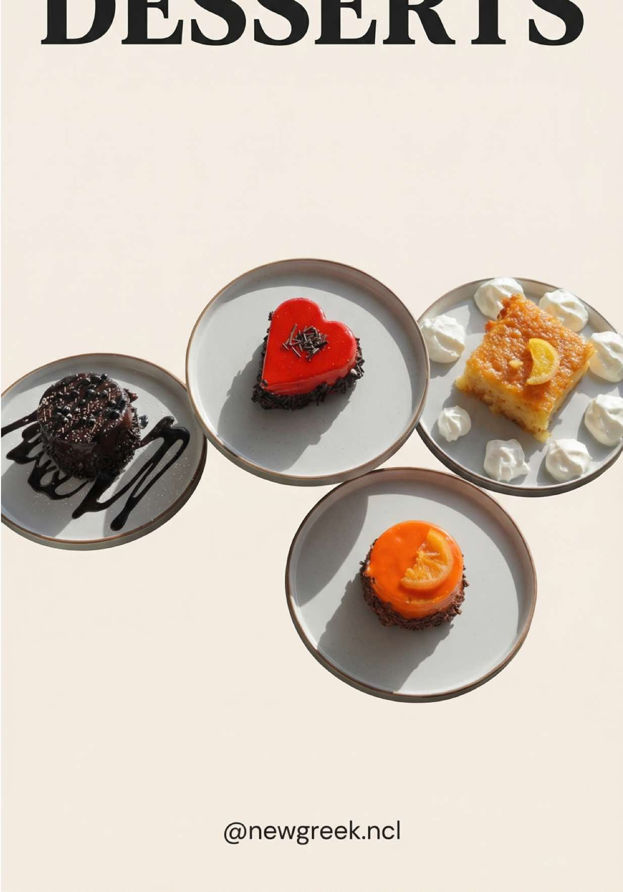
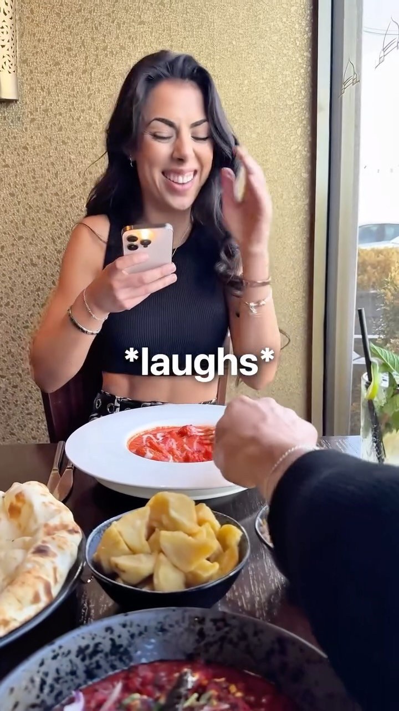
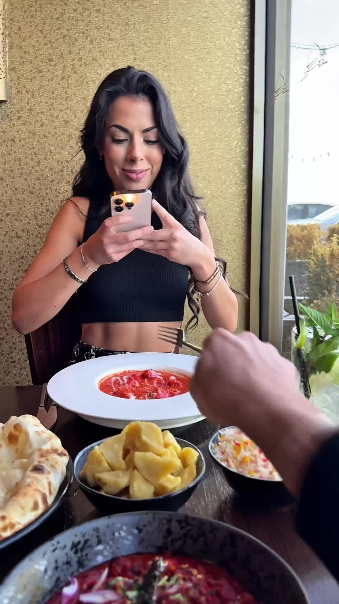
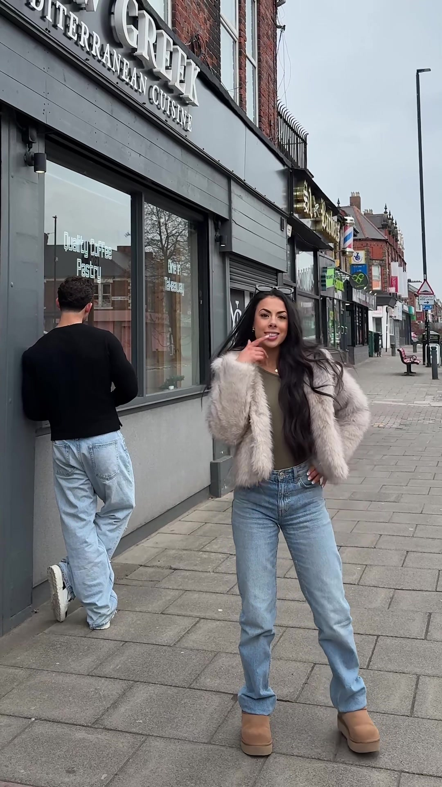

No pitch, honestly. I saw you are hiring for social, and before you do I just wanted to send over a few things I would love to try with the Island.
Quick bit about me: I am Jay, I own Fusion Creative, a content and social agency here in Newcastle. We make short-form video for hospitality brands. Our work for one local restaurant, New Greek, did over 63 million views in 30 days. Newcastle hospitality is the thing we do best.
Loads. The concept is brilliant and the rollout has been slick. You are already over 12,000 followers, the captions have a proper voice, the food-vendor and DJ programming is a content goldmine, and your reels are already pulling serious reach, the "how to get to the Island" one did nearly 40,000 views. You do not need a rebuild. You have built something people clearly want.
A few trend-led videos we have made for other Newcastle food brands, and the views they pulled. Have a watch:

69.7M viewsNew Greek · InstagramThe gyros "impatient customer" reaction.Watch →
7.1M viewsNew Greek · TikTokA quick reaction skit on a trending sound.Watch →
1.8M viewsTakdir · Instagram"Never get between a girl and her post."Watch →
1.1M viewsTakdir · TikTokThe same idea, big again on TikTok.Watch →
865K viewsNew Greek · TikTok"Our food is breath taking."Watch →That is it. If I had the keys to your socials, that is exactly where I would start: atmosphere, reactions and food, on a tight weekly rhythm, turning the reach into bookings.
If any of it is useful, I would love to grab a coffee. Either way, good luck with the opening, the place looks unreal.
Jay